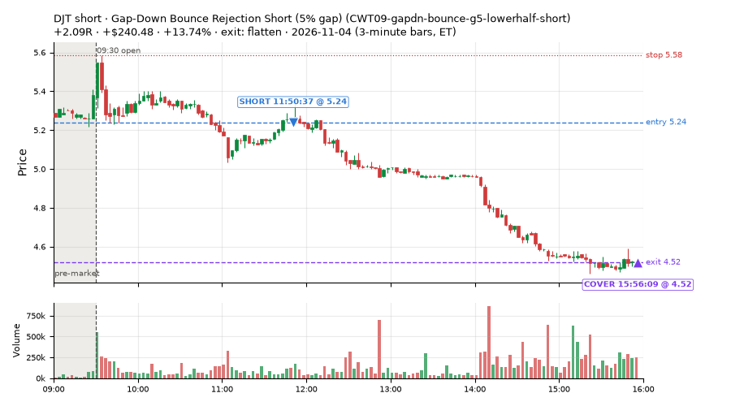
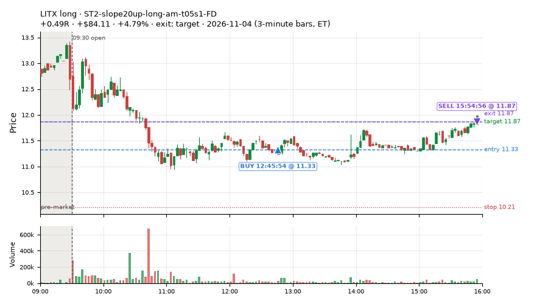
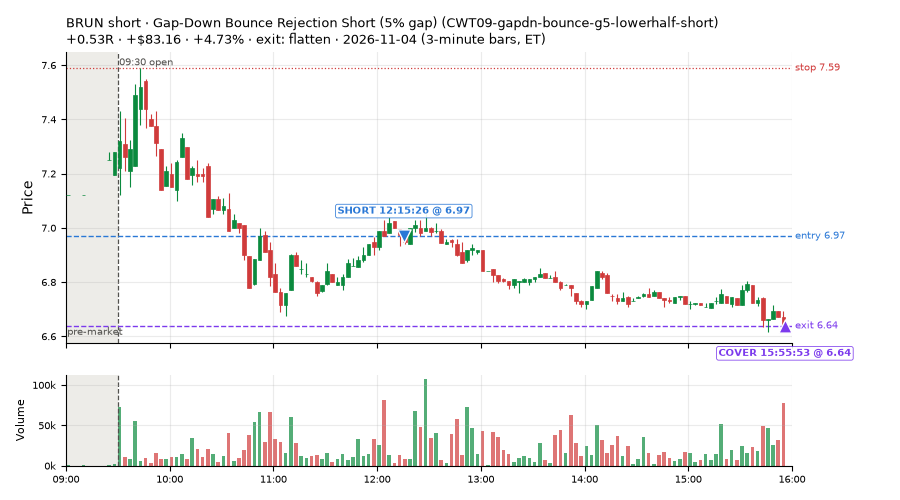
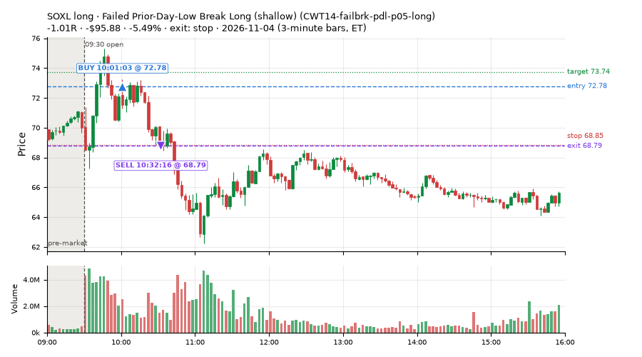
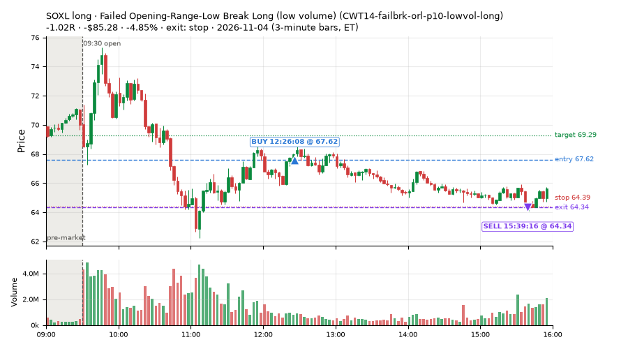
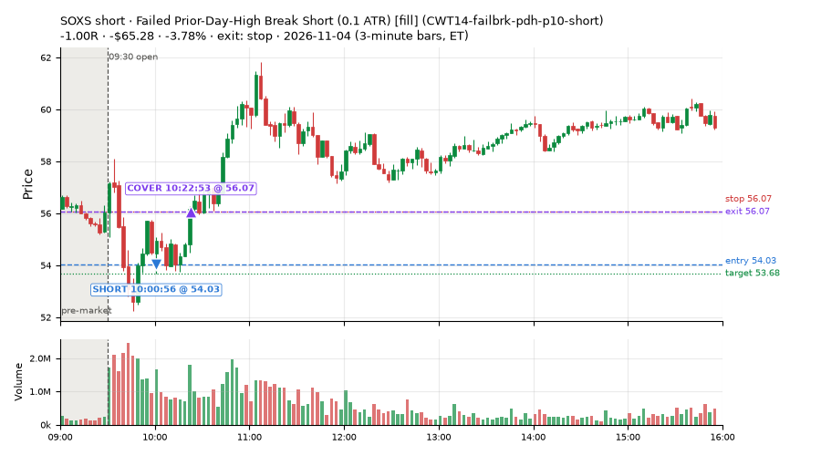
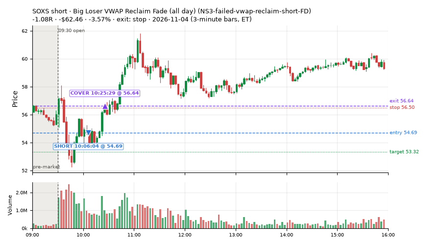
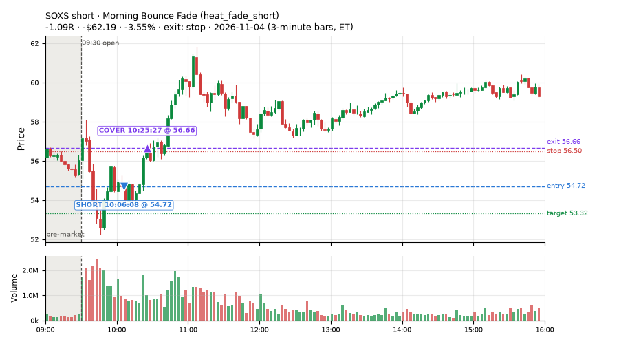

507 trades · win rate 54% · P/L $-642.72
PROBATION: no live setup has passed both locked test periods. 10 owner-directed setups added 2026-10-08 (MarcoFlow top 5 + 5 new), untested live. RW6G1 (RW6 + VWAP band guard) added 2026-10-09, probation.

| Symbol | Setup | Side | In | Out | Entry | Exit | Exit reason | % gained | P/L |
|---|---|---|---|---|---|---|---|---|---|
| DJT | Gap-Down Bounce Rejection Short (5% gap) (CWT09-gapdn-bounce-g5-lowerhalf-short) | short | 11:50 | 15:56 | 5.24 | 4.52 | flatten | +13.74% | $240.48 |
| LITX | ST2-slope20up-long-am-t05s1-FD | long | 12:45 | 15:54 | 11.33 | 11.87 | target | +4.79% | $84.11 |
| BRUN | Gap-Down Bounce Rejection Short (5% gap) (CWT09-gapdn-bounce-g5-lowerhalf-short) | short | 12:15 | 15:55 | 6.97 | 6.64 | flatten | +4.73% | $83.16 |
| Symbol | Setup | Side | In | Out | Entry | Exit | Exit reason | % lost | P/L |
|---|---|---|---|---|---|---|---|---|---|
| SOXL | CWT14-failbrk-pdl-p05-long | long | 10:01 | 10:32 | 72.78 | 68.79 | stop | -5.49% | $-95.88 |
| SOXL | CWT14-failbrk-orl-p10-lowvol-long | long | 12:26 | 15:39 | 67.62 | 64.34 | stop | -4.85% | $-85.28 |
| SOXS | CWT14-failbrk-pdh-p10-short | short | 10:00 | 10:22 | 54.03 | 56.07 | stop | -3.78% | $-65.28 |
| SOXS | NS3-failed-vwap-reclaim-short-FD | short | 10:06 | 10:25 | 54.69 | 56.64 | stop | -3.57% | $-62.46 |
| SOXS | heat_fade_short | short | 10:06 | 10:25 | 54.72 | 56.66 | stop | -3.55% | $-62.19 |








Signal to fill: median 2s, 90th percentile 5s (507 trades). Bars close each minute; the order follows the bar close.
Best excursion (MFE): median 0.51R; worst (MAE) median 0.65R. 26% of trades never got +0.25R in our favour; 18 reached +1R and still closed at or below 0.
| Symbol | Setup | Best R | Worst R | Closed R |
|---|---|---|---|---|
| KRE | CWT14-failbrk-orl-p05-long | +4.87 | -1.35 | -1.21 |
| FITB | CWT14-failbrk-orl-p05-long | +3.79 | -1.77 | -1.85 |
| KEY | CWT14-failbrk-orl-p10-long | +4.05 | -1.52 | -1.09 |
| KBE | CWT14-failbrk-orl-p05-long | +3.79 | -1.43 | -1.27 |
| KEY | CWT14-failbrk-orl-p05-long | +4.05 | -1.52 | -1.01 |
| Entry time | Trades | Win | Avg R | P/L |
|---|---|---|---|---|
| 09:50-10:30 | 198 | 53% | -0.18 | $-813.85 |
| 10:30-11:30 | 191 | 58% | +0.01 | $335.47 |
| 11:30-13:00 | 78 | 51% | -0.10 | $-111.55 |
| 13:00-14:00 | 22 | 50% | -0.06 | $-29.31 |
| 14:00-16:00 | 18 | 50% | -0.06 | $-23.47 |
| Setup | Trades | Win | Avg R | Adj R (net of SPY) | Avg R ex-market (all sessions) | P/L |
|---|---|---|---|---|---|---|
| Gap-Down Bounce Rejection Short (5% gap) (CWT09-gapdn-bounce-g5-lowerhalf-short) | 8.0 | 75% | +0.64 | +0.62 | -0.32 (beta -3.38, n 78) | $373.43 |
| Gap-Down VWAP Loss Short (5% gap) (CWT09-gapdn-vwaploss-g5-short) | 9.0 | 89% | +1.11 | +1.06 | +0.28 (beta -6.31, n 46) | $224.89 |
| Coil Under the High (4 bars) (CWT12-coil-k4-long) | 31.0 | 81% | +0.25 | +0.23 | +0.01 (beta +1.20, n 200) | $55.33 |
| Coil Under the High (6 bars) (CWT12-coil-k6-long) | 7.0 | 71% | +0.98 | +1.03 | -0.13 (beta +1.41, n 84) | $47.92 |
| Stretched Above VWAP Fade (CWT13-vwapstretch-z05-short) | 29.0 | 45% | -0.20 | +0.15 | +0.01 (beta -0.37, n 94) | $-66.15 |
| Failed Opening-Range-Low Break Long (0.05 ATR) [fill] (CWT14-failbrk-orl-p05-long) | 18.0 | 17% | -1.00 | -1.02 | -0.14 (beta +0.94, n 504) | $-47.75 |
| Failed Opening-Range-Low Break Long (0.05 ATR, low volume) [fill] (CWT14-failbrk-orl-p05-lowvol-long) | 4.0 | 25% | -0.86 | -0.88 | -0.10 (beta +0.67, n 411) | $-16.71 |
| Failed Opening-Range-Low Break Long (0.1 ATR) [fill] (CWT14-failbrk-orl-p10-long) | 5.0 | 20% | -0.62 | -0.63 | -0.10 (beta +0.77, n 265) | $-19.45 |
| Failed Opening-Range-Low Break Long (low volume) (CWT14-failbrk-orl-p10-lowvol-long) | 67.0 | 75% | +0.12 | +0.08 | -0.03 (beta +0.69, n 302) | $-111.27 |
| Failed Prior-Day-High Break Short (0.05 ATR, low volume) [fill] (CWT14-failbrk-pdh-p05-lowvol-short) | 23.0 | 57% | -0.21 | -0.25 | -0.14 (beta -1.36, n 185) | $-73.17 |
| Failed Prior-Day-High Break Short (low volume) (CWT14-failbrk-pdh-p10-lowvol-short) | 11.0 | 36% | -0.49 | -0.54 | -0.14 (beta -1.16, n 100) | $-84.41 |
| Failed Prior-Day-High Break Short (0.1 ATR) [fill] (CWT14-failbrk-pdh-p10-short) | 35.0 | 57% | -0.23 | -0.22 | -0.14 (beta -1.96, n 178) | $-152.39 |
| Failed Prior-Day-Low Break Long (shallow) (CWT14-failbrk-pdl-p05-long) | 28.0 | 46% | -0.36 | -0.28 | -0.11 (beta +0.99, n 117) | $-308.28 |
| Failed Prior-Day-Low Break Long (0.05 ATR, low volume) [fill] (CWT14-failbrk-pdl-p05-lowvol-long) | 15.0 | 33% | -0.54 | -0.42 | -0.12 (beta +1.05, n 78) | $-229.11 |
| Opening-Range Low Sweep Reversal (LIQ-orl-sweep-open15-s25-long) | 25.0 | 80% | +0.59 | +0.56 | -0.04 (beta +0.13, n 132) | $316.56 |
| MF1-945-flowsell-vwapup-FD | 5.0 | 40% | -0.08 | -0.51 | +0.06 (beta -3.18, n 52) | $-1.10 |
| Early Sellers into a Pop (all day) (MF3-open-flowsell-rsi5hi-FD) | 10.0 | 50% | -0.11 | -0.25 | +0.07 (beta -2.62, n 23) | $-25.36 |
| MF5-flowsell-vwapup-rsi5hi-FD | 3.0 | 67% | +0.21 | -0.01 | +0.28 (beta -4.56, n 14) | $-4.04 |
| NS2-sma50break-overbought-short-FD | 6.0 | 83% | +0.70 | +0.58 | -0.10 (beta -0.80, n 70) | $62.36 |
| Big Loser VWAP Reclaim Fade (all day) (NS3-failed-vwap-reclaim-short-FD) | 2.0 | 0% | -1.03 | -1.06 | -0.37 (beta -1.77, n 6) | $-102.42 |
| NS5-sma50-flush-oversold-long-FD | 3.0 | 33% | -0.44 | -0.35 | – | $-35.83 |
| RW2-exhaustion-noon-adv150-short-FD | 49.0 | 39% | -0.38 | -0.58 | -0.41 (beta -1.26, n 224) | $-162.34 |
| RW4-ns3-adv150-short-FD | 17.0 | 47% | -0.21 | -0.30 | -0.29 (beta -0.91, n 22) | $-48.95 |
| Big Gainer SMA50 Cross Fade (all day) (RW6-ns2-up3-short-FD) | 1.0 | 100% | +0.30 | +0.01 | -0.11 (beta -2.59, n 30) | $3.01 |
| ST1-ordn-long-pm-t05s1-FD | 3.0 | 33% | -0.35 | -0.36 | -0.39 (beta +1.10, n 14) | $0.38 |
| ST2-slope20up-long-am-t05s1-FD | 35.0 | 49% | -0.14 | -0.11 | +0.01 (beta +1.08, n 126) | $-195.15 |
| ST4-emadn-long-am-t1s05-FD | 5.0 | 40% | +0.19 | +0.44 | -0.77 (beta -3.75, n 5) | $11.34 |
| Midday Gap-Up Dip Buy (heat_fade_long) failed Apr-Jun holdout: -0.138R/trade over 1043 trades | 9.0 | 44% | +0.31 | +0.17 | +0.13 (beta +1.89, n 58) | $20.85 |
| heat_fade_long-FD | 6.0 | 33% | -0.44 | -0.50 | -0.18 (beta +1.34, n 76) | $-43.98 |
| Morning Bounce Fade (heat_fade_short) failed Apr-Jun holdout: -0.015R/trade over 1420 trades | 23.0 | 52% | +0.01 | -0.01 | -0.23 (beta -1.28, n 119) | $-43.89 |
| heat_fade_short-FD | 15.0 | 40% | -0.24 | -0.12 | -0.23 (beta -1.84, n 249) | $12.96 |
Market direction (SPY, beta 1) accounted for $-142.83 of today's $-642.72; the rest ($-499.89) came from the setups themselves. Avg R net of SPY: -0.10 (incl. a hedge leg's cost; report only).
33 setups live today. Today: 1879 signals, 507 taken, 57 lost because another setup held the symbol (3%). Since 2026-10-21 (11 sessions): 10038 signals, 3871 taken, 527 lost to other setups (5%). Peak open positions today 108 of 200 slots. Earnings blackout removed 1697 symbols before scanning.
Simulated playing time (not live): 6145 what-if trades of signals not taken, avg -0.05R, 56% winners; of them 527 lost to another setup (avg -0.11R).
Crowded out: NS2-sma50break-overbought-short · Starved: MF1-945-flowsell-vwapup-FD, heat_fade_long, heat_fade_long-FD, heat_fade_short-FD, NS3-failed-vwap-reclaim-short-FD
| Prio | Setup | Today sig / taken | Sessions | Signals / taken / trades | Taken/day | Expected/day | Lost to other setups | Lost to (setup n) | Top skip reasons | SIMULATED: not-taken n / avg R / win | Verdict |
|---|---|---|---|---|---|---|---|---|---|---|---|
| 1 | ST1-ordn-long-pm-t05s1-FD ST1-ordn-long-pm-t05s1-FD | 5 / 3 | 11 | 22 / 14 / 14 | 1.27 | 3.49 | 0 | – | spread / quote / size 7, broker rejected 1 | 8 / -0.39R / 25% | slow 6.4 entries/week; ~9 weeks to 60 trades |
| 2 | Big Gainer SMA50 Cross Fade (all day) RW6-ns2-up3-short-FD | 4 / 1 | 11 | 71 / 30 / 30 | 2.73 | 7.12 | 6 | CWT12-coil-k4-long 3, LIQ-orl-sweep-open15-s25-long 2, CWT09-gapdn-bounce-g5-lowerhalf-short 1 | not shortable / shorts off 21, daily loss cap 9, symbol held by another setup 6 | 41 / +0.50R / 83% | slow 13.6 entries/week; ~4 weeks to 60 trades |
| 3 | NS2-sma50break-overbought-short-FD NS2-sma50break-overbought-short-FD | 13 / 6 | 11 | 134 / 70 / 70 | 6.36 | 17.08 | 7 | CWT12-coil-k4-long 6, LIQ-orl-sweep-open15-s25-long 1 | not shortable / shorts off 22, daily loss cap 19, spread / quote / size 16 | 64 / +0.35R / 70% | ok 31.8 entries/week |
| 4 | Big Gainer Average Reclaim Fade NS2-sma50break-overbought-short | 2 / 0 | 11 | 63 / 6 / 6 | 0.55 | 5.74 | 38 | NS2-sma50break-overbought-short-FD 33, RW6-ns2-up3-short-FD 9, CWT12-coil-k4-long 4 | symbol held by another setup 38, spread / quote / size 10, not shortable / shorts off 9 | 57 / +0.20R / 65% | crowded-out 38 of 63 signals (60%) lost to setups already holding the symbol |
| 5 | MF1-945-flowsell-vwapup-FD MF1-945-flowsell-vwapup-FD | 8 / 5 | 11 | 142 / 52 / 52 | 4.73 | 23.94 | 2 | CWT12-coil-k6-long 1, CWT14-failbrk-orl-p05-long 1 | daily loss cap 45, spread / quote / size 31, not shortable / shorts off 12 | 90 / -0.02R / 40% | starved 4.73 entries/day vs ~23.94 expected |
| 6 | ST2-slope20up-long-am-t05s1-FD ST2-slope20up-long-am-t05s1-FD | 66 / 35 | 11 | 187 / 126 / 126 | 11.45 | 24.03 | 14 | heat_fade_short-FD 10, CWT09-gapdn-bounce-g5-lowerhalf-short 2, heat_fade_short 1 | spread / quote / size 27, daily loss cap 15, symbol held by another setup 14 | 61 / -0.09R / 56% | ok 57.3 entries/week |
| 7 | Midday Gap-Up Dip Buy heat_fade_long | 11 / 9 | 11 | 92 / 58 / 58 | 5.27 | 30.36 | 12 | heat_fade_long-FD 7, heat_fade_short-FD 2, heat_fade_short 2 | daily loss cap 15, symbol held by another setup 12, spread / quote / size 7 | 34 / -0.39R / 32% | starved 5.27 entries/day vs ~30.36 expected |
| 8 | Opening-Range Low Sweep Reversal LIQ-orl-sweep-open15-s25-long | 80 / 25 | 11 | 232 / 132 / 132 | 12.00 | – | 11 | CWT14-failbrk-orl-p10-long 9, CWT14-failbrk-orl-p05-lowvol-long 9, CWT14-failbrk-orl-p10-lowvol-long 8 | per-setup cap 57, spread / quote / size 22, symbol held by another setup 11 | 100 / +0.00R / 47% | ok 60.0 entries/week |
| 9 | RW2-exhaustion-noon-adv150-short-FD RW2-exhaustion-noon-adv150-short-FD | 139 / 49 | 11 | 525 / 224 / 224 | 20.36 | 50.34 | 11 | CWT12-coil-k4-long 5, CWT12-coil-k6-long 3, CWT14-failbrk-orl-p10-lowvol-long 1 | daily loss cap 152, not shortable / shorts off 61, spread / quote / size 46 | 301 / -0.12R / 46% | ok 101.8 entries/week |
| 10 | heat_fade_long-FD heat_fade_long-FD | 30 / 6 | 11 | 196 / 76 / 76 | 6.91 | 51.74 | 44 | heat_fade_long 39, heat_fade_short-FD 2, heat_fade_short 2 | symbol held by another setup 44, daily loss cap 38, spread / quote / size 38 | 120 / -0.14R / 42% | starved 6.91 entries/day vs ~51.74 expected |
| 11 | Failed Opening-Range-Low Break Long (low volume) CWT14-failbrk-orl-p10-lowvol-long | 98 / 67 | 11 | 488 / 302 / 302 | 27.45 | – | 7 | CWT14-failbrk-pdh-p05-lowvol-short 4, CWT14-failbrk-orl-p05-long 2, CWT14-failbrk-pdh-p10-short 2 | spread / quote / size 87, daily loss cap 70, per-setup cap 17 | 184 / -0.08R / 64% | ok 137.3 entries/week |
| 12 | Failed Opening-Range-Low Break Long (0.1 ATR) [fill] CWT14-failbrk-orl-p10-long | 119 / 5 | 11 | 597 / 265 / 265 | 24.09 | – | 11 | CWT14-failbrk-orl-p05-lowvol-long 7, CWT14-failbrk-orl-p05-long 7, CWT14-failbrk-orl-p10-lowvol-long 7 | daily loss cap 210, spread / quote / size 71, per-setup cap 32 | 329 / -0.09R / 65% | ok 120.5 entries/week |
| 13 | Morning Bounce Fade heat_fade_short | 36 / 23 | 11 | 231 / 119 / 119 | 10.82 | 31.76 | 0 | – | spread / quote / size 66, daily loss cap 32, not shortable / shorts off 12 | 112 / +0.07R / 53% | ok 54.1 entries/week |
| 14 | Failed Opening-Range-Low Break Long (0.05 ATR, low volume) [fill] CWT14-failbrk-orl-p05-lowvol-long | 170 / 4 | 11 | 1092 / 411 / 411 | 37.36 | – | 15 | CWT14-failbrk-orl-p10-lowvol-long 6, CWT14-failbrk-orl-p10-long 5, CWT14-failbrk-orl-p05-long 4 | daily loss cap 413, per-setup cap 137, spread / quote / size 106 | 678 / -0.08R / 64% | ok 186.8 entries/week |
| 15 | heat_fade_short-FD heat_fade_short-FD | 114 / 15 | 11 | 715 / 249 / 249 | 22.64 | 173.78 | 163 | heat_fade_short 120, LIQ-orl-sweep-open15-s25-long 14, CWT14-failbrk-orl-p05-long 9 | symbol held by another setup 163, daily loss cap 145, spread / quote / size 101 | 466 / +0.02R / 52% | starved 22.64 entries/day vs ~173.78 expected |
| 16 | Failed Opening-Range-Low Break Long (0.05 ATR) [fill] CWT14-failbrk-orl-p05-long | 226 / 18 | 11 | 1535 / 504 / 504 | 45.82 | – | 104 | CWT14-failbrk-orl-p10-lowvol-long 84, CWT14-failbrk-orl-p10-long 83, CWT14-failbrk-orl-p05-lowvol-long 81 | daily loss cap 549, per-setup cap 199, spread / quote / size 166 | 1028 / -0.10R / 62% | ok 229.1 entries/week |
| 17 | Gap-Down Bounce Rejection Short (5% gap) CWT09-gapdn-bounce-g5-lowerhalf-short | 45 / 8 | 11 | 412 / 78 / 78 | 7.09 | – | 4 | CWT12-coil-k4-long 3, CWT12-coil-k6-long 1, CWT14-failbrk-orl-p05-long 1 | not shortable / shorts off 249, per-setup cap 32, spread / quote / size 28 | 333 / +0.32R / 56% | ok 35.5 entries/week |
| 18 | Failed Prior-Day-High Break Short (0.05 ATR, low volume) [fill] CWT14-failbrk-pdh-p05-lowvol-short | 82 / 23 | 10 | 571 / 185 / 185 | 18.50 | – | 7 | CWT14-failbrk-orl-p10-long 4, CWT14-failbrk-orl-p10-lowvol-long 3, CWT14-failbrk-orl-p05-long 3 | daily loss cap 232, spread / quote / size 107, not shortable / shorts off 36 | 386 / -0.04R / 64% | ok 92.5 entries/week |
| 19 | Failed Prior-Day-High Break Short (low volume) CWT14-failbrk-pdh-p10-lowvol-short | 44 / 11 | 10 | 238 / 100 / 100 | 10.00 | – | 3 | CWT14-failbrk-orl-p10-long 2, CWT14-failbrk-orl-p05-long 2, CWT12-coil-k4-long 1 | spread / quote / size 65, daily loss cap 53, not shortable / shorts off 14 | 138 / -0.07R / 64% | ok 50.0 entries/week |
| 20 | Failed Prior-Day-High Break Short (0.1 ATR) [fill] CWT14-failbrk-pdh-p10-short | 70 / 35 | 9 | 393 / 178 / 178 | 19.78 | – | 8 | CWT14-failbrk-pdh-p05-lowvol-short 3, CWT14-failbrk-pdh-p10-lowvol-short 3, CWT14-failbrk-orl-p10-long 3 | spread / quote / size 100, daily loss cap 60, not shortable / shorts off 28 | 215 / -0.04R / 64% | ok 98.9 entries/week |
| 21 | Stretched Above VWAP Fade CWT13-vwapstretch-z05-short | 118 / 29 | 9 | 233 / 94 / 94 | 10.44 | – | 2 | LIQ-orl-sweep-open15-s25-long 1, CWT12-coil-k4-long 1 | daily loss cap 102, spread / quote / size 17, not shortable / shorts off 15 | 139 / -0.11R / 45% | ok 52.2 entries/week |
| 22 | Gap-Down VWAP Loss Short (5% gap) CWT09-gapdn-vwaploss-g5-short | 83 / 9 | 8 | 453 / 46 / 46 | 5.75 | – | 3 | CWT14-failbrk-orl-p05-lowvol-long 1, CWT14-failbrk-orl-p05-long 1, CWT14-failbrk-pdl-p05-long 1 | not shortable / shorts off 295, per-setup cap 54, spread / quote / size 35 | 400 / -0.12R / 39% | ok 28.8 entries/week |
| 23 | Coil Under the High (6 bars) CWT12-coil-k6-long | 11 / 7 | 7 | 263 / 84 / 84 | 12.00 | – | 17 | heat_fade_short 5, CWT14-failbrk-pdh-p10-short 4, CWT14-failbrk-pdh-p05-lowvol-short 3 | daily loss cap 88, spread / quote / size 59, symbol held by another setup 17 | 179 / -0.21R / 35% | ok 60.0 entries/week |
| 24 | Coil Under the High (4 bars) CWT12-coil-k4-long | 44 / 31 | 5 | 482 / 200 / 200 | 40.00 | – | 21 | RW2-exhaustion-noon-adv150-short-FD 10, heat_fade_short 3, CWT14-failbrk-pdh-p05-lowvol-short 2 | per-setup cap 194, spread / quote / size 47, symbol held by another setup 21 | 281 / -0.29R / 50% | ok 200.0 entries/week |
| 25 | Failed Prior-Day-Low Break Long (shallow) CWT14-failbrk-pdl-p05-long | 86 / 28 | 4 | 279 / 117 / 117 | 29.25 | – | 2 | CWT14-failbrk-orl-p10-lowvol-long 2, CWT14-failbrk-orl-p10-long 2, CWT14-failbrk-orl-p05-lowvol-long 2 | daily loss cap 103, spread / quote / size 52, broker rejected 4 | 161 / -0.11R / 61% | ok 146.2 entries/week |
| 26 | Failed Prior-Day-Low Break Long (0.05 ATR, low volume) [fill] CWT14-failbrk-pdl-p05-lowvol-long | 59 / 15 | 4 | 173 / 78 / 78 | 19.50 | – | 7 | CWT14-failbrk-orl-p05-lowvol-long 7, CWT14-failbrk-orl-p05-long 5, CWT14-failbrk-pdl-p05-long 5 | daily loss cap 49, spread / quote / size 34, symbol held by another setup 7 | 94 / -0.09R / 63% | ok 97.5 entries/week |
| 27 | Big Loser VWAP Reclaim Fade (all day) NS3-failed-vwap-reclaim-short-FD | 49 / 2 | 3 | 77 / 6 / 6 | 2.00 | 22.02 | 2 | ST2-slope20up-long-am-t05s1-FD 1, CWT14-failbrk-pdh-p10-short 1, heat_fade_short 1 | daily loss cap 44, not shortable / shorts off 21, spread / quote / size 4 | 71 / -0.01R / 52% | starved 2.00 entries/day vs ~22.02 expected |
| 28 | RW4-ns3-adv150-short-FD RW4-ns3-adv150-short-FD | 26 / 17 | 3 | 44 / 22 / 22 | 7.33 | 17.34 | 6 | ST2-slope20up-long-am-t05s1-FD 3, NS3-failed-vwap-reclaim-short-FD 3, CWT14-failbrk-pdh-p10-short 2 | spread / quote / size 7, symbol held by another setup 6, not shortable / shorts off 6 | 22 / +0.06R / 55% | ok 36.7 entries/week |
| 29 | Early Sellers into a Pop (all day) MF3-open-flowsell-rsi5hi-FD | 15 / 10 | 2 | 48 / 23 / 23 | 11.50 | 24.16 | 0 | – | daily loss cap 11, broker rejected 6, not shortable / shorts off 4 | 25 / +0.38R / 72% | ok 57.5 entries/week |
| 30 | MF5-flowsell-vwapup-rsi5hi-FD MF5-flowsell-vwapup-rsi5hi-FD | 4 / 3 | 2 | 28 / 14 / 14 | 7.00 | 15.47 | 0 | – | broker rejected 8, daily loss cap 5, spread / quote / size 1 | 14 / +0.56R / 93% | ok 35.0 entries/week |
| 31 | NS5-sma50-flush-oversold-long-FD NS5-sma50-flush-oversold-long-FD | 11 / 3 | 1 | 11 / 3 / 3 | 3.00 | 6.32 | 0 | – | daily loss cap 8 | 8 / +0.62R / 88% | ok 15.0 entries/week |
| 32 | ST4-emadn-long-am-t1s05-FD ST4-emadn-long-am-t1s05-FD | 8 / 5 | 1 | 8 / 5 / 5 | 5.00 | 2.77 | 0 | – | spread / quote / size 3 | 3 / -0.14R / 33% | ok 25.0 entries/week |
| 33 | RW6G1-ns2-up3-vwap2sd-short-FD RW6G1-ns2-up3-vwap2sd-short-FD | 3 / 0 | 1 | 3 / 0 / 0 | 0.00 | 3.73 | 0 | – | not shortable / shorts off 3 | 3 / +0.79R / 100% | slow no entries yet |
Every trade is attached as a CSV you can open and edit in Excel or Google Sheets. Live page: https://misiti15.github.io/MCF/live/